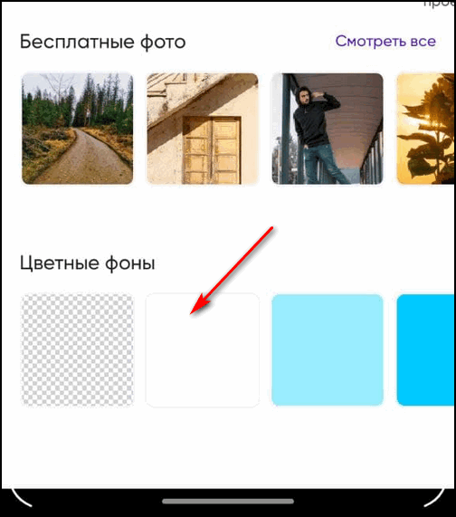
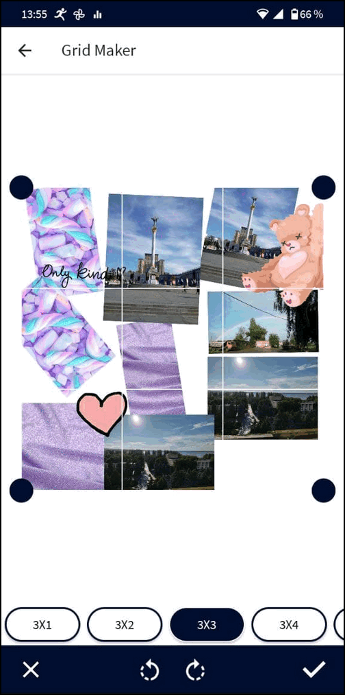
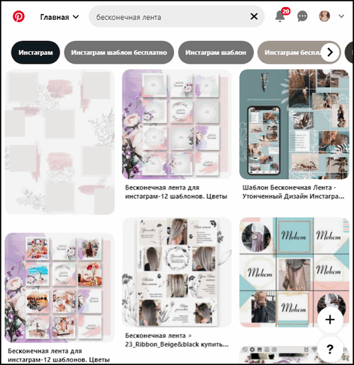
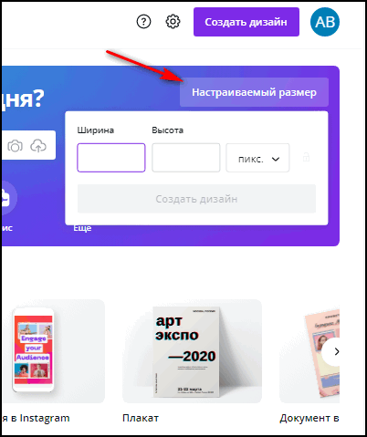
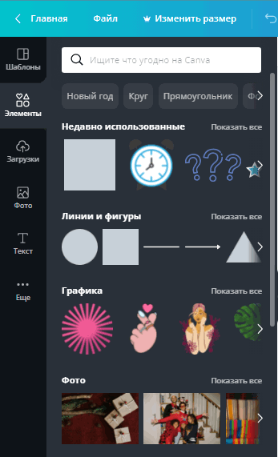
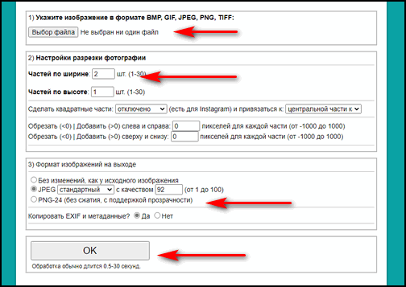

Шаблоны для публикаций в Инстаграме: подборка 150+ лучших

Шаблоны для постов в Инстаграме* можно скачать, создать самостоятельно или сгенерировать через мобильные приложения. Простой вариант: воспользоваться приложениями для Android и iOS, чтобы сделать уникальный дизайн.
Бесконечная лента и шаблоны для публикаций
Бесконечная Лента в Инстаграме* – это один из способов, как оформить страницу в одинаковом стиле. Владелец блога может найти примеры, воспользоваться уже готовыми вариантами или заказать у дизайнера. Особенность «Бесконечной Ленты» в том, что это одна картинка, куда автор вставляет свои фотографии или вносит небольшие коррективы. Перед размещением картинку делят на 9 частей и постепенно размещая в Инстаграме*. Переходя в такой профиль, посетитель видит цельную картинку.
Шаблоны – это изображения в одном стиле, но разные по исполнению. Их также используют для простого оформления социальных сетей, загружая только фотографии или текст. ?Скачать сразу 150+ разных можно ниже в статье по ссылке.?
Преимущества оформления:
- скорость. Можно заранее сделать с десяток снимков и загрузить в шаблоны, чтобы не заниматься созданием контента постоянно;
- выбор. Есть три сотни вариантов, которые подходят для личного блога, так и для интернет-магазина;
- создание мини-лендинга с минимальными тратами. Автору достаточно одного часа, чтобы полностью оформить страницу, загрузить контент и наполнить информацией.
Из минусов: такой вариант оформления устарел и пользуется успехом при работе с портфолио.
Скачать 150+ шаблонов бесплатно
Скачать папку с шаблонами, где более 150 бесплатных для оформления страницы в Инстаграме*.
Среди них есть:
- Создание бесконечной ленты в Photosop;
- формат PNG. Чтобы вставить свое фото нужно установить приложение PicsArt и Grid Master.
При добавлении с помощью PicsArt, пользователю пригодятся инструменты: «Ластик» и «Добавить фото». На некоторых изображения присутствуют элементы стиля, которые должны перекрывать снимок. И чтобы показать их на верхнем слое, нужно стирать часть фотографии.
Также есть отдельные шаблоны, которые нужно только разделить и можно публиковать в Instagram*. В паке представлены варианты в формате PSD, JGEG и PSB. Они открываются с помощью Photoshop и владелец аккаунта сможет редактировать изображения.
Сделать бесконечную ленту в Инстаграм* самостоятельно
Наиболее простой вариант, как сделать красивую Ленту – воспользоваться приложением PicsArt. С его настройках есть пункт: «Изменение размера холста», где можно выбирать параметры ширины и высоты. Кроме этого, есть перечень пользовательских графических объектов, которыми украшают изображение.
- Скачать и установить PicsArt – открыть.
- Выбрать вариант: «Цветные фоны» - Инструменты.

- Размер – указать разрешение для картинки: «3240х3240».
- В перечне выбрать: «Добавить фото» - выбрать изображения из Галереи (9 штук).

- Разместить на холсте – с помощью инструментов: «Стикеры» и «Текст» сделать оформление.
- Сохранить на телефон.
- Зайти в Play Market – Grid Maker (скачать и установить).
- Открыть – выбрать сохраненный проект из Pics Art.

- Указать количество частей: «3х3» - нажать: «Создать».
В галерее мобильного устройства появится 9 отдельных картинок, которые нужно поочередно размещать в Инстаграме*. Начинают с первой, которая расположена в нижнем правом углу.
Где еще искать бесплатные шаблоны
С помощью сервиса Pinterest можно найти готовые дизайны бесконечной ленты. Но это изображения, в которых уже есть фотографии и картинки. Отредактировать такой шаблон не получится. Другие способы:
- Сервис поддерживает создание шаблонов, а пользователь посмотрит примеры на сайте;
- PSD-варианты. Подойдут для пользователей, которые разбираются в компьютерной программе Photoshop;
- группы в социальных сетях. Можно найти специалиста, который сделает за небольшую плату или воспользоваться бесплатными вариантами.
В основном, чтобы отыскать шаблоны, нужно использовать PSD или Pinterest. Количество доступных вариантов – небольшое, потому что такие работы либо оплачиваются у дизайнера, либо создаются в специальных программах. Как через Pinterest отыскать шаблоны:
- Зайти на платформу – авторизоваться с помощью аккаунта Google или Facebook*.
- Открыть – ввести в поиске: «Бесконечная лента».

- Выбрать один из предложенных вариантов.
Среди изображений пользователь отыщет ссылки на сайты, которые предлагают бесплатное оформление профиля. При загрузке на компьютер, нужно проверять формат вложенных файлов: PSD не подойдет пользователям, которые не работают с Photoshop.
Онлайн-сервисы с шаблонами для Инстаграма*
С помощью Canva можно сделать оформление для страницы. Сервис предлагает разрозненный шаблоны, но с помощью функции: «Холст» и бесплатных графических объектов, можно создать бесконечную ленту. Сделать оформление с помощью Canva:
- Перейти в сервис, зарегистрироваться – нажать сверху: «Настраиваемый размер».
- Ввести значение – Элементы.

- Добавить графические объекты и залить фон.
- Использовать стоковые фото или загрузить свои.

- Разместить на холсте – Сохранить картинку на компьютер.
Чтобы нарезать изображение, автору профиля пригодится:
- Перейти по ссылке: «Нарезать фото».
- Загрузить снимок – выбрать параметры нарезки: «3х3».

- PNG 24 – подождать, пока сервис нарежет картинку на равные части.
Далее, пользователь сможет загружать картинки, воспользовавшись компьютерной версией социальной сети или переслав на мобильное устройство.
Мобильные приложения с шаблонами
Шаблон прайса в Инстаграм* или для публикаций можно подобрать с помощью мобильных приложений.
- GoDaddy Studio (OVER). Приложение, которое поддерживает список шаблонов (платных и бесплатных), предлагает перечень инструментов;
- Spark Post: Graphic Design. Кроме шаблонов поддерживает редактирование фото, можно отыскать бесплатные варианты для оформления страницы;
- Jane. Фильтры, шаблоны, инструменты и элементы редактирования.
- Зайти в Play Market – скачать и установить.
- Открыть и авторизоваться.
- Перейти в раздел: «Instagram* шаблоны» - отредактировать текст, вставить свои изображения.
- Сохранить на смартфон.
С помощью приложения можно оформить свою страницу, выбрав бесплатные шаблоны. Преимущество OVER в том, что с его помощью можно редактировать готовые изображения, работать с купленными шаблонами.
Шаблоны для личного блога: актуальность
Шаблоны и бесконечная лента в Инстаграме* больше не популярны. Такой вариант оформления страницы подходит для рабочих аккаунтов, лендингов и портфолио. Почему такой способ перестал быть актуальным:
- однотипность. Многие профили оформлены одинаковыми шаблонами;
- не у всех пользователей хватает познаний в работе программного обеспечения. Сделать уникальный шрифт, добавить цветокоррекцию удается не всем;
- минимум своих материалов. В Инстаграме* публике нравятся личные фотоснимки владельца страницы, а не текст.
Уникальное оформление страницы – визитная карточка каждого блогера, владельца личной экспертной страницы. Это даже касается рабочих аккаунтов, где автор планирует размещать материалы, связанные с продажей косметики, парфюмерии или хенд-мейд продукции.
У шаблонов есть всего одно преимущество – доступность. Их можно найти в онлайн-сервисах, воспользоваться через мобильные приложения. Когда на создание своего креативного контента автор может потратить несколько часов, дней и даже привлечь профессионального фотографа. Направленность современных блогов на естественность и демонстрацию повседневных задач. Даже для аккаунта эксперта или рабочей страницы такие правила работают. В первом случае, автор может делиться своими будничными делами, добавляя туда заметки о ежедневных задачах. Относительно рабочего аккаунта – привлечь коллег к созданию креативного контента.